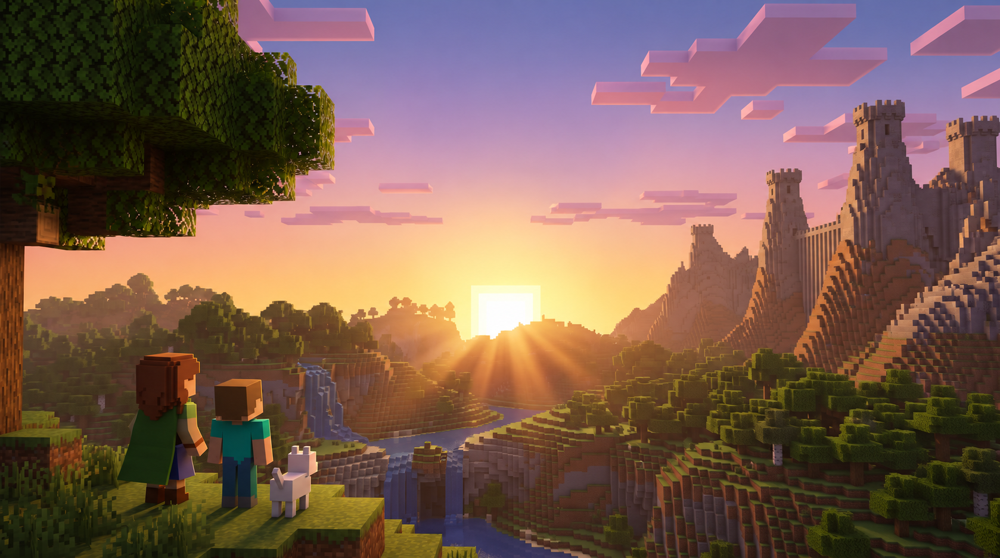
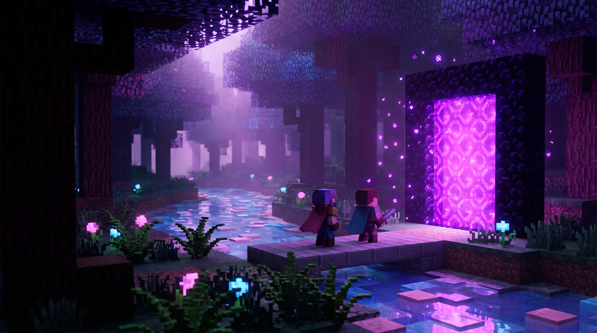

Wimji
Tools for a more creative
Minecraft world.

Built by
creators,
for creators.
Wimji makes it easier to find inspiration, create new content, and bring your Minecraft ideas to life.

Tools for a more creative
Minecraft world.

Wimji makes it easier to find inspiration, create new content, and bring your Minecraft ideas to life.